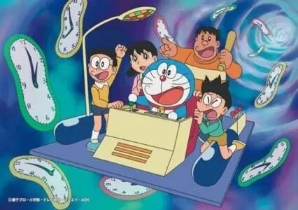
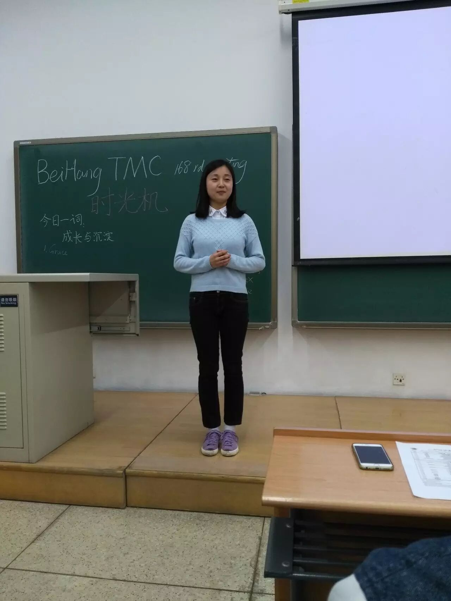
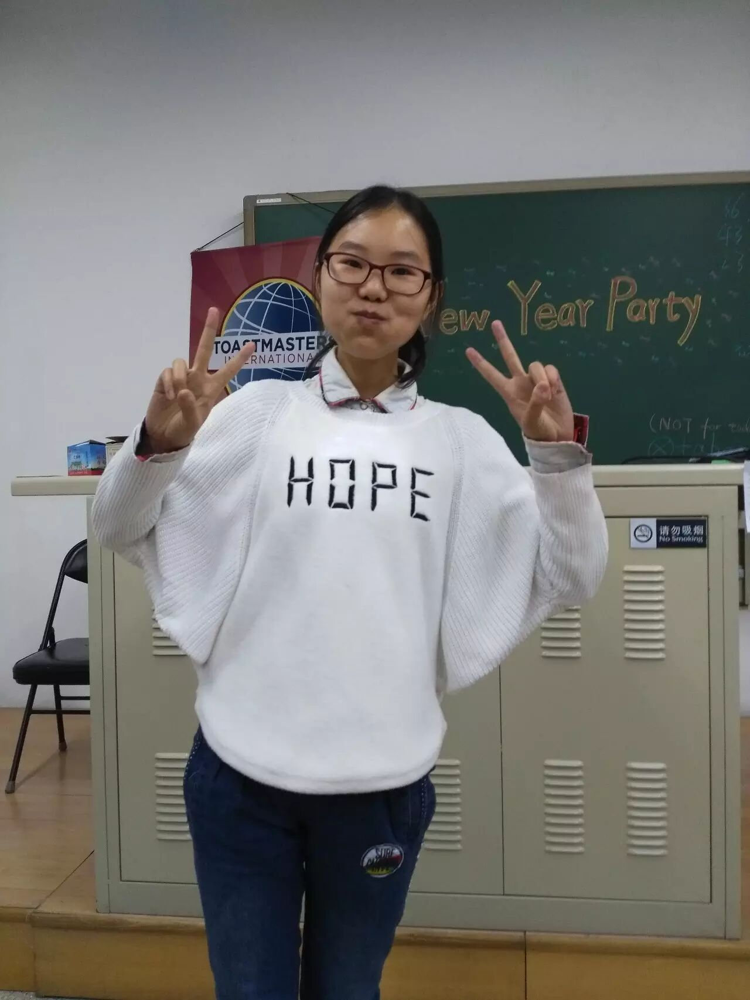
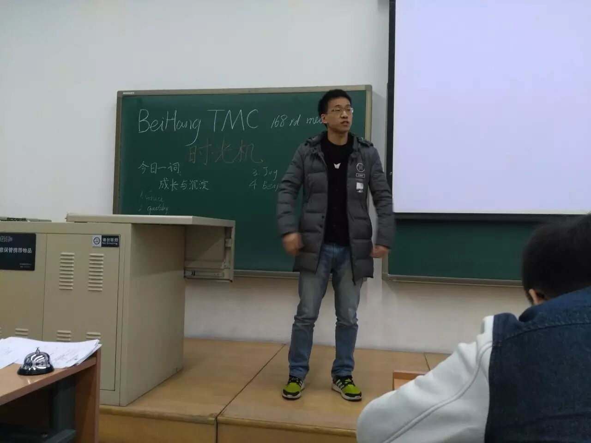
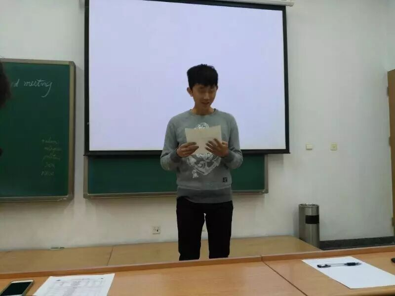
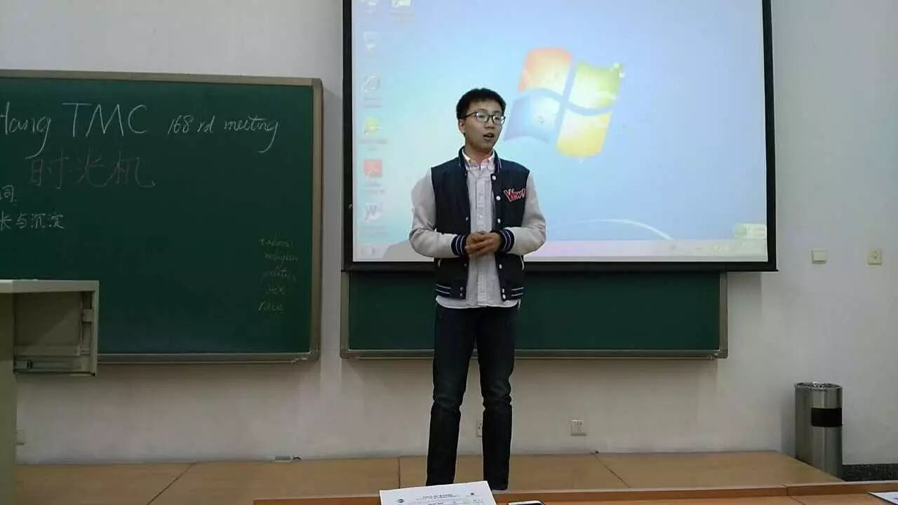
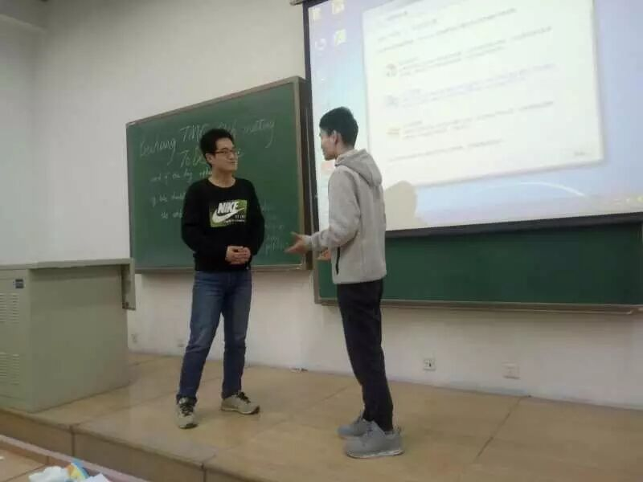
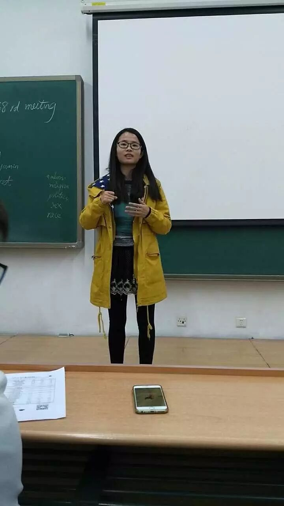
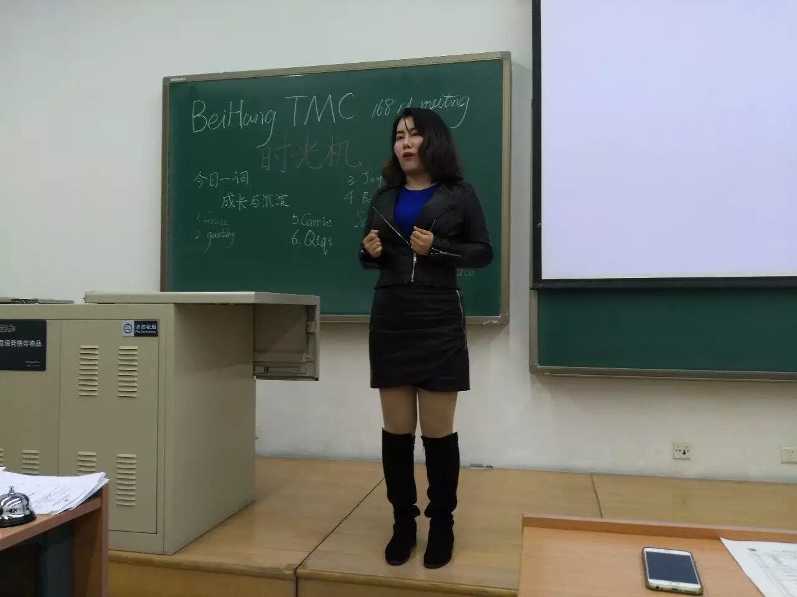
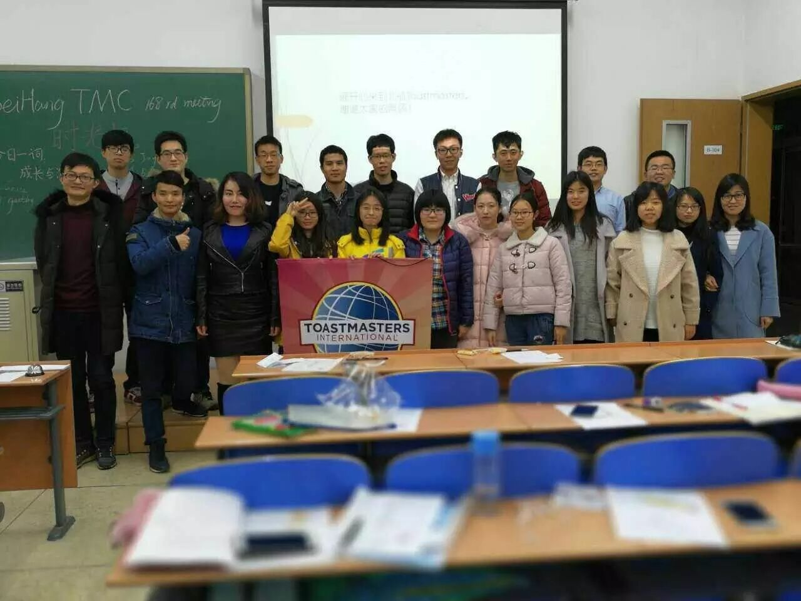

曾几何时，我们从小学到中学，经历中考、高考，再到我们现在的大学，我们走过了漫长而艰辛的路；曾几何时，我们的童伴、基友或者闺蜜，和我们渐行渐远；曾几何时，那一年我们曾经追过的女孩，已经嫁为人妇，早已没有了当年的容颜。突然间，我们都长大了，像雨后的春笋，经历过漫长的童年，然后在少年时期欣欣向荣，儿时的梦想的光芒慢慢照亮现实的美好。来不及好好的体验青春，春春已经过去了。就像泰戈尔的诗句说的一样------天空中没有翅膀的痕迹，但鸟儿已经飞过。
青春总是有那么多后知后觉的美丽，假如目前的科技允许我们穿越时空！大家最想回到哪里呢？

如果你可以回到过去，你最想回到什么时候？ ---（Grace）
Grace静静的走上讲台，缓缓的告诉大家，如果她可以回到过去，她最想回到她高一的时候，因为那个时候的自己最任性，对自己的奶奶和家人都比较爱发小脾气，她感到很后悔! 长大的Grace感受到了亲情的真谛，希望以后不会在那么任性，好好的学习，去争取更好的未来。

假如你能穿越到未来呢！你最想回到什么时候？ ----Joy(王娟）
Joy是学心理专业的，对她而言，最有趣和最有意义的事就是研究人的心理成长过程，一个好的生活环境和良好的家庭教育对孩子的成长非常重要。所以Joy如果有时光机，她最想穿越到自己成为一名母亲的时候，通过自己的所学专业，为了孩子的一切倾注自己的所有。除非亲耳听见，要不然真的很难相信的，感恩母爱！

初恋往往不会被珍惜，你怎么看？
这位同学带给了大家不一样的看法，他说：“初恋不是不被珍惜，往往是因为是初恋的我们不懂得怎么去爱一个人，才会因为各自的脾气在琐事中迷失自我导致分手。”其实，我是很认同这位同学的观点。也许这不是他的原话，但是他的话比他的名字更让我印象深刻，抱歉！

以上就是我们的Table Topic环节，Rocky为大家准备了7个问题，5个Single Question 和 2个 Double Question, 不要问我为什么记这么清楚，因为我还没有上车，说错了，上讲台！期待他的下次努力。

Frank初次ToastMaster担任这个角色，充分发挥了他幽默的谈吐和敏捷的串场能力。虽然时不时会不自信的问问John一切技巧问题，但是实力证明，你行！

王永光博士给大家带来了不一样的演讲，中英文的穿插，除了从语言角度来说，是两种不同的语言，其实我感觉没有多大不同，都是听不太懂。古代的诗词，翻译成英文是怎么样的呢？原谅我书读的少，下次我也背点古诗词！

北航作为一所985高校，身为北航研究生的朱巾帼同学自然奋发图强忙着科研，本想着她会给大家带来她研究科研成果的心力路程，她却说出了自己准备CC演讲的写稿经历。虽然有点遗憾，没有听到高大上的科研研究过程，但是演讲过程中不加停顿的表达，说明她还是用心准备了的。

读万卷书，不如行万里路。旅行的意义真的只是从自己活腻了的地方，去到别人活腻了的地方吗？赵奇琪刚从意大利的都灵大学留学后回国，就忍不住给大家带来了自己留学过程中的奇闻趣事。身在异国家乡的她独自一人吃各种美食，到后来被迫自己学做饭，从笨手笨脚，到邀请朋友回家聚餐。曾经的她经历过什么？只有经历过的她自己知道。然后再单身上路旅行罗马，也许你也需要和她一样的勇气去面对以后的生活。

然后，到了我们的点评环节。
孙千策点评王永光：
1）内容古诗词太多，晦涩难懂，建议改成白话文，通俗易懂。
2）古诗词翻译成英文时，多介绍和解释自己的理解，和观众互动。
3）时间不要超时。
王娟点评朱巾帼：
1）总体很好，但是在内容和题目感觉让人产生歧义。
2）语句通顺，表达流利。
3）站在讲台上演讲，你会更自信。
张纯洁点评赵奇琪：
1）非常的勇敢！
2）表达的思想和主题都是非常的鲜明和生动。
3）有肢体语言和观众互动的眼神交流。
4）演讲很好，继续努力。
